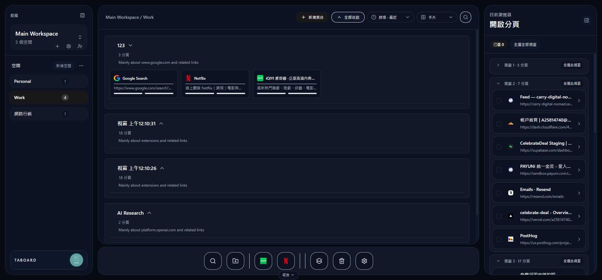

這不是示意模型。你看到的，就是正在運作的 Taboard 真實畫面。
組織管理不同團隊與身份
空間切換不同工作場景
集合保存完整任務脈絡
開啟分頁整理正在進行的工作
用空間，切換你的工作腦袋。
專案、個人研究、日常工具，各自待在自己的空間。你不必記住分頁放在哪，只要回到當時的工作場景。
組織與空間導覽正在開的分頁，也能隨手收好。
右側直接看見目前瀏覽器視窗。多選分頁後加入集合、移動到其他空間，或放進 Dock，混亂不用等到下班才整理。
即時分頁整理常用工具，永遠都在手邊。
底部 Dock 放進每天會打開的工具、最近使用與快速操作。下一次要開始工作，不用再重走一次搜尋與切換的路。
Dock 快速啟動列